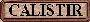

İNTERNET
İnternete bağlanmak için her
şey modem kartıyla çözümlenemiyor. Programlar ve bu programlardan
istifade edebilmek gerekli oluyor birçok zaman. İşte onların en
gereklileri burada.
mIRC5.7
ve MMs Script Sohbet Etme
Dünyanın en çok tercih
edilen chat programı. Programlarda, tercihlerinize uygun kanallar
bulabilmeniz için gelişmiş arama seçenekleri bulunuyor. Mirc’i
kurduktan sonra MMs Script’i çalıştırarak Türkçe bir ekrana
kavuşmak mümkün.
MIRC  MMs
Script
MMs
Script
Hotmail Messenger
Bu program Hotmail’den
e-mail alanların aynı anda karşılıklı olarak
yazışmalarını ve konuşmalarını sağlayan
mükemmel bir program. Ayrıca bu program, size gelen e-mailleri de
anında haber veriyor. Herkese tavsiye ederim.

Jet Sms Kısa Mesaj Gönderme
İnternet üzerinden cep
telefonlarına kısa mesaj göndermek için hazırlanmış
Türkçe bir program.
Offline
Explorer Web Sitesi İndirme
Bu program ile Web sitelerini
bilgisayarınıza indirebilirsiniz. Crack dosyasını,
programı kurduktan sonra dosyasının bulunduğu yere
kopyalarsınız süresiz kullanıma sahip olacaksınız.

İnternet Bağlantı Ücreti
İnternet
bağlantınızın süresine göre ne kadar tuttuğunu hesaplayan
Türkçe bir program..
Dosya İndirme
(DLExpert 0.95 ve GoZilla 3.91)
İnternetten
istediğiniz dosyayı bu programlarla indirebilirsiniz. Bir
dosyayı download ederken dosya aktarma hızı, tahmini olarak
kalan süre ve o andaki internet bağlantı hızınızı
görebilirsiniz. Programların en güzel özelliği ise herhangi bir
dosyayı aradığınızda çıkan çok sayıdaki link
arasından en hızlı olanı seçmeleri.
DLEXPERT  GOZİLLA
GOZİLLA 
SüperOnline 4.1 Tr İnternete
Bağlan
İnternetle
bağlantı kurmanın en kolay ve en emin yolu.

Deprem Monitörü
Türkiye’de son yaşanan
depremler hakkında bu programı kurarak bilgi edinebilirsiniz..

Favori Site Adresleri
Bilgisayarınızda
bulunan internet adresleri, BookmarkWizard.exe ile bölümlere ayrılarak
size sunuluyor. Ayrıca Türkçe olarak hazırlanan “COOLİNKS”
programı ile favori site adreslerine ulaşabilirsiniz.

e yeter